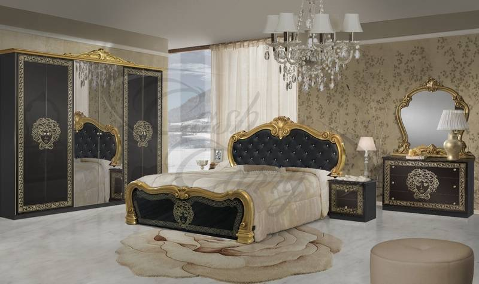

Историята помни владетели, които печелят битки. Но понякога истинската промяна идва от тези, които имат смелостта да променят мисленето на своето време.
Такъв владетел е
Султан Абдул АзисВ средата на XIX век Османската империя стои между два свята – древния Ориент и бързо развиваща се Европа. Това е време на съмнения, но и на нови възможности. И именно тогава султан Абдул Азис избира пътя на промяната.
По негово време империята започва да се събужда. Строят се железници и телеграфни линии, появяват се нови училища, модернизира се армията. Старият свят започва бавно да отваря врати към новия.
Пътуването към Европа
През 1867 г. той прави нещо, което никой османски султан преди него не е правил – напуска пределите на империята и тръгва към Европа. Там се среща с най-влиятелните владетели на своето време – Наполеон III и кралица Виктория.
Това пътуване се превръща в символ на една нова идея: че различните култури могат да се срещнат, да се разберат и да създадат нещо по-красиво заедно.
Българската Екзархия
Малко по-късно, през 1870 г., султанът подписва фермана за създаването на Българската екзархия – акт, който дава на българския народ духовна свобода и нова надежда.
Това е история за смелостта да изграждаш мостове между различни светове, написана преди 150 години, която сега препрочитаме.
Раждането на AZIS
Примерът за тихия реформатор ни мотивира през 1996-та година в прохождащата млада компания ЯВОР да създадем линията Азис. Тази линия се развива в годините с добавяне на нови модели и примери за съвместяване на привидно несъвместимото в дизайна и архитектурата.

Тя е като среща между два свята на красотата.
Между богатството, орнаментите и топлината на Ориента и чистите линии, функционалността и хармонията на съвременния европейски дом.
Философията
Във всяка форма, във всеки детайл и във всяка линия се преплитат традиция и модерност, история и съвременност.
Това е стил, който не просто украсява пространството – той създава атмосфера, жадна за комфорт, но подчинена на съвременната архитектура. Атмосфера на изтънченост, характер и културна дълбочина.
Азис е нашият поклон към една идея, родена преди повече от век – че когато културите се срещнат с уважение и вдъхновение, се ражда истинската красота.